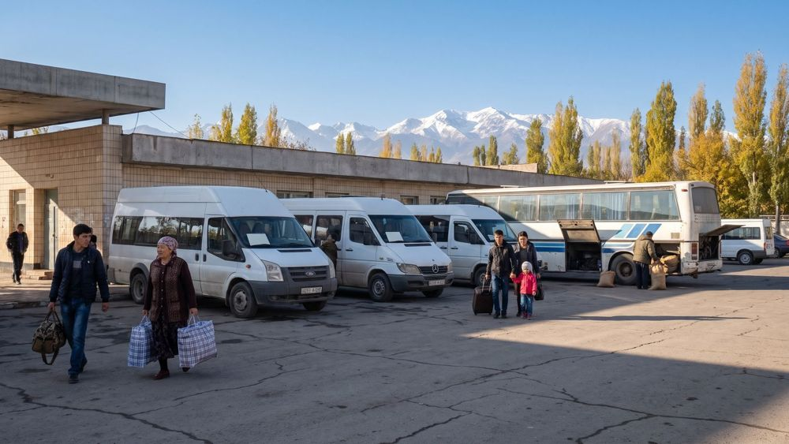

Marshrutkas and city buses
About 120 marshrutka routes and 9 city bus routes serve Talas. One ride costs 2 som, paid to the driver. The main city routes are below; the full list is on the boards at Central Square and the Central Bus Station.

Routes to Nurzhan, Kara-Bulak, Kyzyl-Adyr and the villages leave from the Central Bus Station (Talas Avtovokzalı). Timetables and fares are posted at the station.
Every bus and marshrutka route with its stops and timetable, the winter timetable, route changes and lost property: Talas City Bus Park (transport.talas.iradgov.org), dispatcher 41-15-15.